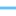

<!doctype html>
<html lang="en">
    <head>
        <meta charset="utf-8">
        <meta http-equiv="X-UA-Compatible" content="IE=edge">
        <meta name="viewport" content="initial-scale=1,user-scalable=no,maximum-scale=1,width=device-width">
        <meta name="mobile-web-app-capable" content="yes">
        <meta name="apple-mobile-web-app-capable" content="yes">
        <link rel="stylesheet" href="css/leaflet.css">
        <link rel="stylesheet" href="css/qgis2web.css"><link rel="stylesheet" href="css/fontawesome-all.min.css">
        <style>
        html, body, #map {
            width: 100%;
            height: 100%;
            padding: 0;
            margin: 0;
        }
        </style>
        <title></title>
    </head>
    <body>
        <div id="map">
        </div>
        <script src="js/qgis2web_expressions.js"></script>
        <script src="js/leaflet.js"></script>
        <script src="js/leaflet.rotatedMarker.js"></script>
        <script src="js/leaflet.pattern.js"></script>
        <script src="js/leaflet-hash.js"></script>
        <script src="js/Autolinker.min.js"></script>
        <script src="js/rbush.min.js"></script>
        <script src="js/labelgun.min.js"></script>
        <script src="js/labels.js"></script>
        <script src="data/ExisringRightofWay_1.js"></script>
        <script src="data/ProposedRightofWay_2.js"></script>
        <script>
        var map = L.map('map', {
            zoomControl:true, maxZoom:28, minZoom:1
        }).fitBounds([[30.207525374796443,-97.82232544429503],[30.334075701229462,-97.62588354210467]]);
        var hash = new L.Hash(map);
        map.attributionControl.setPrefix('<a href="https://github.com/tomchadwin/qgis2web" target="_blank">qgis2web</a> &middot; <a href="https://leafletjs.com" title="A JS library for interactive maps">Leaflet</a> &middot; <a href="https://qgis.org">QGIS</a>');
        var autolinker = new Autolinker({truncate: {length: 30, location: 'smart'}});
        var bounds_group = new L.featureGroup([]);
        function setBounds() {
        }
        map.createPane('pane_BaseMapCARTO_0');
        map.getPane('pane_BaseMapCARTO_0').style.zIndex = 400;
        var layer_BaseMapCARTO_0 = L.tileLayer('http://a.basemaps.cartocdn.com/light_all/{z}/{x}/{y}@2x.png', {
            pane: 'pane_BaseMapCARTO_0',
            opacity: 1.0,
            attribution: '<a href="https://cartodb.com/basemaps/">Map tiles by CartoDB, under CC BY 3.0. Data by OpenStreetMap, under ODbL.</a>',
            minZoom: 1,
            maxZoom: 28,
            minNativeZoom: 0,
            maxNativeZoom: 20
        });
        layer_BaseMapCARTO_0;
        map.addLayer(layer_BaseMapCARTO_0);
        function pop_ExisringRightofWay_1(feature, layer) {
            var popupContent = '<table>\
                    <tr>\
                        <td colspan="2">' + (feature.properties['Name'] !== null ? autolinker.link(feature.properties['Name'].toLocaleString()) : '') + '</td>\
                    </tr>\
                    <tr>\
                        <td colspan="2">' + (feature.properties['descriptio'] !== null ? autolinker.link(feature.properties['descriptio'].toLocaleString()) : '') + '</td>\
                    </tr>\
                    <tr>\
                        <td colspan="2">' + (feature.properties['timestamp'] !== null ? autolinker.link(feature.properties['timestamp'].toLocaleString()) : '') + '</td>\
                    </tr>\
                    <tr>\
                        <td colspan="2">' + (feature.properties['begin'] !== null ? autolinker.link(feature.properties['begin'].toLocaleString()) : '') + '</td>\
                    </tr>\
                    <tr>\
                        <td colspan="2">' + (feature.properties['end'] !== null ? autolinker.link(feature.properties['end'].toLocaleString()) : '') + '</td>\
                    </tr>\
                    <tr>\
                        <td colspan="2">' + (feature.properties['altitudeMo'] !== null ? autolinker.link(feature.properties['altitudeMo'].toLocaleString()) : '') + '</td>\
                    </tr>\
                    <tr>\
                        <td colspan="2">' + (feature.properties['tessellate'] !== null ? autolinker.link(feature.properties['tessellate'].toLocaleString()) : '') + '</td>\
                    </tr>\
                    <tr>\
                        <td colspan="2">' + (feature.properties['extrude'] !== null ? autolinker.link(feature.properties['extrude'].toLocaleString()) : '') + '</td>\
                    </tr>\
                    <tr>\
                        <td colspan="2">' + (feature.properties['visibility'] !== null ? autolinker.link(feature.properties['visibility'].toLocaleString()) : '') + '</td>\
                    </tr>\
                    <tr>\
                        <td colspan="2">' + (feature.properties['drawOrder'] !== null ? autolinker.link(feature.properties['drawOrder'].toLocaleString()) : '') + '</td>\
                    </tr>\
                    <tr>\
                        <td colspan="2">' + (feature.properties['icon'] !== null ? autolinker.link(feature.properties['icon'].toLocaleString()) : '') + '</td>\
                    </tr>\
                </table>';
            layer.bindPopup(popupContent, {maxHeight: 400});
        }

        function style_ExisringRightofWay_1_0() {
            return {
                pane: 'pane_ExisringRightofWay_1',
                opacity: 1,
                color: 'rgba(98,192,250,1.0)',
                dashArray: '',
                lineCap: 'square',
                lineJoin: 'bevel',
                weight: 2.0,
                fillOpacity: 0,
                interactive: false,
            }
        }
        map.createPane('pane_ExisringRightofWay_1');
        map.getPane('pane_ExisringRightofWay_1').style.zIndex = 401;
        map.getPane('pane_ExisringRightofWay_1').style['mix-blend-mode'] = 'normal';
        var layer_ExisringRightofWay_1 = new L.geoJson(json_ExisringRightofWay_1, {
            attribution: '',
            interactive: false,
            dataVar: 'json_ExisringRightofWay_1',
            layerName: 'layer_ExisringRightofWay_1',
            pane: 'pane_ExisringRightofWay_1',
            onEachFeature: pop_ExisringRightofWay_1,
            style: style_ExisringRightofWay_1_0,
        });
        bounds_group.addLayer(layer_ExisringRightofWay_1);
        map.addLayer(layer_ExisringRightofWay_1);
        function pop_ProposedRightofWay_2(feature, layer) {
            var popupContent = '<table>\
                    <tr>\
                        <td colspan="2">' + (feature.properties['Name'] !== null ? autolinker.link(feature.properties['Name'].toLocaleString()) : '') + '</td>\
                    </tr>\
                    <tr>\
                        <td colspan="2">' + (feature.properties['descriptio'] !== null ? autolinker.link(feature.properties['descriptio'].toLocaleString()) : '') + '</td>\
                    </tr>\
                    <tr>\
                        <td colspan="2">' + (feature.properties['timestamp'] !== null ? autolinker.link(feature.properties['timestamp'].toLocaleString()) : '') + '</td>\
                    </tr>\
                    <tr>\
                        <td colspan="2">' + (feature.properties['begin'] !== null ? autolinker.link(feature.properties['begin'].toLocaleString()) : '') + '</td>\
                    </tr>\
                    <tr>\
                        <td colspan="2">' + (feature.properties['end'] !== null ? autolinker.link(feature.properties['end'].toLocaleString()) : '') + '</td>\
                    </tr>\
                    <tr>\
                        <td colspan="2">' + (feature.properties['altitudeMo'] !== null ? autolinker.link(feature.properties['altitudeMo'].toLocaleString()) : '') + '</td>\
                    </tr>\
                    <tr>\
                        <td colspan="2">' + (feature.properties['tessellate'] !== null ? autolinker.link(feature.properties['tessellate'].toLocaleString()) : '') + '</td>\
                    </tr>\
                    <tr>\
                        <td colspan="2">' + (feature.properties['extrude'] !== null ? autolinker.link(feature.properties['extrude'].toLocaleString()) : '') + '</td>\
                    </tr>\
                    <tr>\
                        <td colspan="2">' + (feature.properties['visibility'] !== null ? autolinker.link(feature.properties['visibility'].toLocaleString()) : '') + '</td>\
                    </tr>\
                    <tr>\
                        <td colspan="2">' + (feature.properties['drawOrder'] !== null ? autolinker.link(feature.properties['drawOrder'].toLocaleString()) : '') + '</td>\
                    </tr>\
                    <tr>\
                        <td colspan="2">' + (feature.properties['icon'] !== null ? autolinker.link(feature.properties['icon'].toLocaleString()) : '') + '</td>\
                    </tr>\
                </table>';
            layer.bindPopup(popupContent, {maxHeight: 400});
        }

        function style_ProposedRightofWay_2_0() {
            return {
                pane: 'pane_ProposedRightofWay_2',
                opacity: 1,
                color: 'rgba(255,0,0,1.0)',
                dashArray: '',
                lineCap: 'square',
                lineJoin: 'bevel',
                weight: 3.0,
                fillOpacity: 0,
                interactive: false,
            }
        }
        map.createPane('pane_ProposedRightofWay_2');
        map.getPane('pane_ProposedRightofWay_2').style.zIndex = 402;
        map.getPane('pane_ProposedRightofWay_2').style['mix-blend-mode'] = 'normal';
        var layer_ProposedRightofWay_2 = new L.geoJson(json_ProposedRightofWay_2, {
            attribution: '',
            interactive: false,
            dataVar: 'json_ProposedRightofWay_2',
            layerName: 'layer_ProposedRightofWay_2',
            pane: 'pane_ProposedRightofWay_2',
            onEachFeature: pop_ProposedRightofWay_2,
            style: style_ProposedRightofWay_2_0,
        });
        bounds_group.addLayer(layer_ProposedRightofWay_2);
        map.addLayer(layer_ProposedRightofWay_2);
        var baseMaps = {};
        L.control.layers(baseMaps,{' Proposed Right-of-Way': layer_ProposedRightofWay_2,' Exisring Right-of-Way': layer_ExisringRightofWay_1,"Base Map (CARTO)": layer_BaseMapCARTO_0,},{collapsed:false}).addTo(map);
        setBounds();
        </script>
    </body>
</html>
